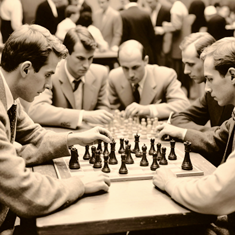

Чтобы поддержать Международный васюкинский
турнир посетите лекцию на тему:
«Плодотворная дебютная идея»
Чтобы поддержать Международный васюкинский турнир

посетите лекцию
на тему:
«Плодотворная дебютная идея»

и Сеанс
одновременной игры
в шахматы на 160 досках
гроссмейстера О. Бендера
- Место проведения:
- Клуб «Картонажник»
- Дата и время мероприятия:
- 22 июня 1927 г. в 18:00
- Стоимость входных билетов:
- 20 коп.
- Плата за игру:
- 50 коп.
- Взнос на телеграммы:
100 руб.21 руб. 16 коп.
Этапы преображения Васюков
Будущие источники обогащения васюкинцев